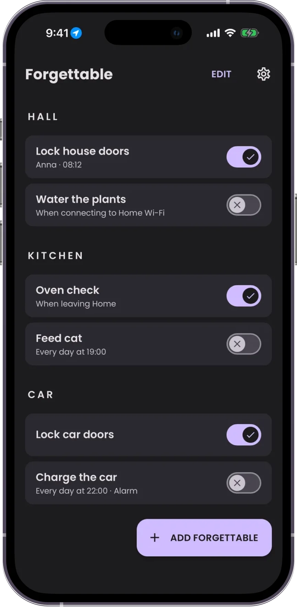

Rams Design Review
A Claude skill that checks your design against Dieter Rams' ten principles and tells you which one each mistake breaks.
The principles
- 01Innovative
- 02Useful
- 03Aesthetic
- 04Understandable
- 05Unobtrusive
- 06Honest
- 07Long-lasting
- 08Thorough down to the last detail
- 09Environmentally friendly
- 10As little design as possible
How it works
Share the design. A screenshot, a Figma link, a live URL or UI code.
Answer up to four questions. The goal, the users, how finished it is, and what it has to follow. It skips anything the design already answers.
Get the review. A one-line verdict, issues ranked by severity with a concrete fix for each, and a table covering all ten principles. Only real problems are reported. See an example.
Example review

Forgettable, home checklist app
Assumed: goal is seeing at a glance which checks are done; users are household members; final hi-fi; iOS.
The toggles mean two different things, so you can't tell whether a check is done or just a reminder that is switched on.
High Toggle meaning is ambiguous
- Where
- Every row
- Problem
- "Lock house doors · Anna · 08:12" reads as done. "Water the plants · When connecting to Home Wi-Fi" reads as a rule. The same switch can't say both "completed" and "reminder enabled".
- Breaks
- #4 Understandable · #6 Honest
- Fix
- Pick one meaning. For completion, use a checkbox and show who and when. Move trigger rules into the item's settings.
High Nothing shows what still needs doing
- Where
- Whole list
- Problem
- Done and pending items look the same apart from the switch, and there's no state for overdue. The main question, "did we forget anything?", has no answer at a glance.
- Breaks
- #2 Useful
- Fix
- Add a summary at the top ("2 of 6 done") and visually dim done items, or move them below the pending ones.
Medium ✕ in the off state reads as failure
- Where
- Off toggles
- Problem
- A cross signals an error or something missed. "Feed cat" at 9:41 isn't failed, it's just later today.
- Breaks
- #4 Understandable · #5 Unobtrusive
- Fix
- Use an empty neutral state. Save warning styling for actually overdue items.
Medium "Forgettable" as a noun
- Where
- "Add Forgettable" button
- Problem
- It's a fine app name but unclear as an object. New users won't know what they're adding.
- Breaks
- #4 Understandable
- Fix
- "Add check" or "Add reminder".
Medium Inconsistent row details
- Where
- Subtitles
- Problem
- One row shows a person and time, others a trigger, "Lock car doors" shows nothing, and only "Charge the car" names its alert type ("Alarm").
- Breaks
- #8 Thorough
- Fix
- Same structure for every row: status line first (who · when, or due time), trigger as secondary detail.
Low Heavy chrome for six items
- Where
- Section headers, cards
- Problem
- Widely tracked all-caps headers, large gaps and a card per item fit only six checks on a screen.
- Breaks
- #10 As little design as possible
- Fix
- Group items in one card per room with dividers, and use quieter sentence-case headers.
Low Android-style caps on iOS
- Where
- "EDIT", "ADD FORGETTABLE"
- Problem
- All-caps buttons and a floating action button come from Material Design and feel foreign next to iOS system UI.
- Breaks
- #3 Aesthetic · #7 Long-lasting
- Fix
- Sentence-case labels; consider a + in the navigation bar instead of the floating button.
| Principle | Status |
|---|
| 01 Innovative | OK. Wi-Fi and location triggers are a smart use of the phone. |
| 02 Useful | 1 issue |
| 03 Aesthetic | 1 issue |
| 04 Understandable | 3 issues |
| 05 Unobtrusive | secondary |
| 06 Honest | secondary |
| 07 Long-lasting | secondary |
| 08 Thorough | 1 issue |
| 09 Environmentally friendly | OK |
| 10 As little design as possible | 1 issue |
Install
Claude app: download SKILL.md, put it in a folder named rams-design-review, zip it and upload under Settings → Capabilities → Skills.
Claude Code:
mkdir -p ~/.claude/skills/rams-design-review
curl -L https://github.com/Sevcovic/rams-design-review/raw/main/skill/SKILL.md \
-o ~/.claude/skills/rams-design-review/SKILL.md
Then ask: "Review this with Rams principles" and attach your design.